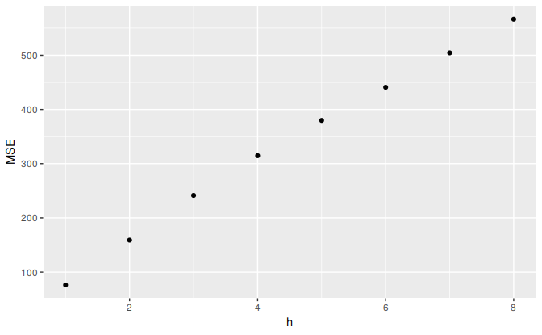

3.4 Evaluating forecast accuracy
Training and test sets
It is important to evaluate forecast accuracy using genuine forecasts. Consequently, the size of the residuals is not a reliable indication of how large true forecast errors are likely to be. The accuracy of forecasts can only be determined by considering how well a model performs on new data that were not used when fitting the model.
When choosing models, it is common practice to separate the available data into two portions, training and test data, where the training data is used to estimate any parameters of a forecasting method and the test data is used to evaluate its accuracy. Because the test data is not used in determining the forecasts, it should provide a reliable indication of how well the model is likely to forecast on new data.

The size of the test set is typically about 20% of the total sample, although this value depends on how long the sample is and how far ahead you want to forecast. The test set should ideally be at least as large as the maximum forecast horizon required. The following points should be noted.
- A model which fits the training data well will not necessarily forecast well.
- A perfect fit can always be obtained by using a model with enough parameters.
- Over-fitting a model to data is just as bad as failing to identify a systematic pattern in the data.
Some references describe the test set as the “hold-out set” because these data are “held out” of the data used for fitting. Other references call the training set the “in-sample data” and the test set the “out-of-sample data”. We prefer to use “training data” and “test data” in this book.
Functions to subset a time series
The window function introduced in Chapter 2 is very useful when extracting a portion of a time series, such as we need when creating training and test sets. In the window function, we specify the start and/or end of the portion of time series required using time values. For example,
window(ausbeer, start=1995)extracts all data from 1995 onwards.
Another useful function is subset which allows for more types of subsetting. A great advantage of this function is that it allows the use of indices to choose a subset. For example,
subset(ausbeer, start=length(ausbeer)-4*5)extracts the last 5 years of observations from ausbeer. It also allows extracting all values for a specific season. For example,
subset(ausbeer, quarter = 1)extracts the first quarters for all years.
Finally, head and tail are useful for extracting the first few or last few observations. For example, the last 5 years of ausbeer can also be obtained using
tail(ausbeer, 4*5)Forecast errors
A forecast “error” is the difference between an observed value and its forecast. Here “error” does not mean a mistake, it means the unpredictable part of an observation. It can be written as \[ e_{T+h} = y_{T+h} - \hat{y}_{T+h|T}, \] where the training data is given by \(\{y_1,\dots,y_T\}\) and the test data is given by \(\{y_{T+1},y_{T+2},\dots\}\).
Note that forecast errors are different from residuals in two ways. First, residuals are calculated on the training set while forecast errors are calculated on the test set. Second, residuals are based on one-step forecasts while forecast errors can involve multi-step forecasts.
We can measure forecast accuracy by summarising the forecast errors in different ways.
Scale-dependent errors
The forecast errors are on the same scale as the data. Accuracy measures that are based only on \(e_{t}\) are therefore scale-dependent and cannot be used to make comparisons between series that involve different units.
The two most commonly used scale-dependent measures are based on the absolute errors or squared errors: \[\begin{align*} \text{Mean absolute error: MAE} & = \text{mean}(|e_{t}|),\\ \text{Root mean squared error: RMSE} & = \sqrt{\text{mean}(e_{t}^2)}. \end{align*}\] When comparing forecast methods applied to a single time series, or to several time series with the same units, the MAE is popular as it is easy to both understand and compute. A forecast method that minimizes the MAE will lead to forecasts of the median, while minimizing the RMSE will lead to forecasts of the mean. Consequently, the RMSE is also widely used, despite being more difficult to interpret.
Percentage errors
The percentage error is given by \(p_{t} = 100 e_{t}/y_{t}\). Percentage errors have the advantage of being unit-free, and so are frequently used to compare forecast performances between data sets. The most commonly used measure is: \[ \text{Mean absolute percentage error: MAPE} = \text{mean}(|p_{t}|). \] Measures based on percentage errors have the disadvantage of being infinite or undefined if \(y_{t}=0\) for any \(t\) in the period of interest, and having extreme values if any \(y_{t}\) is close to zero. Another problem with percentage errors that is often overlooked is that they assume the unit of measurement has a meaningful zero.2 For example, a percentage error makes no sense when measuring the accuracy of temperature forecasts on either the Fahrenheit or Celsius scales, because temperature has an arbitrary zero point.
They also have the disadvantage that they put a heavier penalty on negative errors than on positive errors. This observation led to the use of the so-called “symmetric” MAPE (sMAPE) proposed by Armstrong (1985, 348), which was used in the M3 forecasting competition. It is defined by \[ \text{sMAPE} = \text{mean}\left(200|y_{t} - \hat{y}_{t}|/(y_{t}+\hat{y}_{t})\right). \] However, if \(y_{t}\) is close to zero, \(\hat{y}_{t}\) is also likely to be close to zero. Thus, the measure still involves division by a number close to zero, making the calculation unstable. Also, the value of sMAPE can be negative, so it is not really a measure of “absolute percentage errors” at all.
Hyndman and Koehler (2006) recommend that the sMAPE not be used. It is included here only because it is widely used, although we will not use it in this book.
Scaled errors
Scaled errors were proposed by Hyndman and Koehler (2006) as an alternative to using percentage errors when comparing forecast accuracy across series with different units. They proposed scaling the errors based on the training MAE from a simple forecast method.
For a non-seasonal time series, a useful way to define a scaled error uses naïve forecasts: \[ q_{j} = \frac{\displaystyle e_{j}} {\displaystyle\frac{1}{T-1}\sum_{t=2}^T |y_{t}-y_{t-1}|}. \] Because the numerator and denominator both involve values on the scale of the original data, \(q_{j}\) is independent of the scale of the data. A scaled error is less than one if it arises from a better forecast than the average naïve forecast computed on the training data. Conversely, it is greater than one if the forecast is worse than the average naïve forecast computed on the training data.
For seasonal time series, a scaled error can be defined using seasonal naïve forecasts: \[ q_{j} = \frac{\displaystyle e_{j}} {\displaystyle\frac{1}{T-m}\sum_{t=m+1}^T |y_{t}-y_{t-m}|}. \]
The mean absolute scaled error is simply \[ \text{MASE} = \text{mean}(|q_{j}|). \] Similarly, the mean squared scaled error (MSSE) can be defined where the errors (on both the training data and test data) are squared instead of using absolute values.
###Examples {-}
beer2 <- window(ausbeer,start=1992,end=c(2007,4))
beerfit1 <- meanf(beer2,h=10)
beerfit2 <- rwf(beer2,h=10)
beerfit3 <- snaive(beer2,h=10)
autoplot(window(ausbeer, start=1992)) +
forecast::autolayer(beerfit1$mean, series="Mean") +
forecast::autolayer(beerfit2$mean, series="Naïve") +
forecast::autolayer(beerfit3$mean, series="Seasonal naïve") +
xlab("Year") + ylab("Megalitres") +
ggtitle("Forecasts for quarterly beer production") +
guides(colour=guide_legend(title="Forecast"))
Figure 3.8: Forecasts of Australian quarterly beer production using data up to the end of 2007.
Figure 3.8 shows three forecast methods applied to the quarterly Australian beer production using data only to the end of 2007. The actual values for the period 2008–2010 are also shown. We compute the forecast accuracy measures for this period.
beer3 <- window(ausbeer, start=2008)
accuracy(beerfit1, beer3)
accuracy(beerfit2, beer3)
accuracy(beerfit3, beer3)| RMSE | MAE | MAPE | MASE | |
|---|---|---|---|---|
| Mean method | 38.5 | 34.8 | 8.28 | 2.44 |
| Naïve method | 62.7 | 57.4 | 14.18 | 4.01 |
| Seasonal naïve method | 14.3 | 13.4 | 3.17 | 0.94 |
It is obvious from the graph that the seasonal naïve method is best for these data, although it can still be improved, as we will discover later. Sometimes, different accuracy measures will lead to different results as to which forecast method is best. However, in this case, all of the results point to the seasonal naïve method as the best of these three methods for this data set.
To take a non-seasonal example, consider the Dow Jones Index. The following graph shows the 250 observations ending on 15 July 1994, along with forecasts of the next 42 days obtained from three different methods.
dj2 <- window(dj, end=250)
djfc1 <- meanf(dj2, h=42)
djfc2 <- rwf(dj2, h=42)
djfc3 <- rwf(dj2, drift=TRUE, h=42)
autoplot(dj) +
forecast::autolayer(djfc1$mean, series="Mean") +
forecast::autolayer(djfc2$mean, series="Naïve") +
forecast::autolayer(djfc3$mean, series="Drift") +
xlab("Day") + ylab("") +
ggtitle("Dow Jones Index (daily ending 15 Jul 94)") +
guides(colour=guide_legend(title="Forecast"))Figure 3.9: Forecasts of the Dow Jones Index from 16 July 1994.
dj3 <- window(dj, start=251)
accuracy(djfc1, dj3)
accuracy(djfc2, dj3)
accuracy(djfc3, dj3)| RMSE | MAE | MAPE | MASE | |
|---|---|---|---|---|
| Mean method | 148.2 | 142.4 | 3.66 | 8.70 |
| Naïve method | 62.0 | 54.4 | 1.40 | 3.32 |
| Drift method | 53.7 | 45.7 | 1.18 | 2.79 |
Here, the best method is the drift method (regardless of which accuracy measure is used).
###Time series cross-validation {-}
A more sophisticated version of training/test sets is time series cross-validation. In this procedure, there are a series of test sets, each consisting of a single observation. The corresponding training set consists only of observations that occurred prior to the observation that forms the test set. Thus, no future observations can be used in constructing the forecast. Since it is not possible to obtain a reliable forecast based on a very small training set, the earliest observations are not considered as test sets.
The following diagram illustrates the series of training and test sets, where the blue observations form the training sets, and the red observations form the test sets.

The forecast accuracy is computed by averaging over the test sets. This procedure is sometimes known as “evaluation on a rolling forecasting origin” because the “origin” at which the forecast is based rolls forward in time.
With time series forecasting, one-step forecasts may not be as relevant as multi-step forecasts. In this case, the cross-validation procedure based on a rolling forecasting origin can be modified to allow multi-step errors to be used. Suppose that we are interested in models that produce good \(4\)-step-ahead forecasts. Then the corresponding diagram is shown below.

Time series cross validation is implemented with the tsCV function. In the following example, we compare the residual RMSE with the RMSE obtained via time series cross-validation.
e <- tsCV(dj, rwf, drift=TRUE, h=1)
sqrt(mean(e^2, na.rm=TRUE))
#> [1] 22.7
sqrt(mean(residuals(rwf(dj, drift=TRUE))^2, na.rm=TRUE))
#> [1] 22.5As expected, the RMSE from the residuals is smaller, as the corresponding “forecasts” are based on a model fitted to the entire data set, rather than being true forecasts.
A good way to choose the best forecasting model is to find the model with the smallest RMSE computed using time series cross-validation.
The ugliness of the above R code makes this a good opportunity to introduce some alternative ways of stringing R functions together. In the above code, we are nesting functions within functions within functions, so you have to read the code from the inside out, making it difficult to understand what is being computed. Instead, we can use the pipe operator %>% as follows
dj %>% tsCV(forecastfunction=rwf, drift=TRUE, h=1) -> e
e^2 %>% mean(na.rm=TRUE) %>% sqrt()
dj %>% rwf(drift=TRUE) %>% residuals() -> res
res^2 %>% mean(na.rm=TRUE) %>% sqrt()The left hand side of each pipe is passed as the first argument to the function on the right hand side. This is consistent with the way we read from left to right in English. A consequence of using pipes is that all other arguments must be named, which also helps readability. When using pipes, it is natural to use the right arrow assignment -> rather than the left arrow. For example, the third line above can be read as “Take the dj series, pass it to rwf with drift=TRUE, compute the resulting residuals, and store them as res”.
In the remainder of this book, we will use the pipe operator whenever it makes the code easier to read. In order to be consistent, we will always follow a function with parentheses to differentiate it from other objects, even if it has no arguments. See for example the use of sqrt() in the code above.
###Example: using tsCV() {-}
The goog data, plotted below, includes daily closing stock prices of Google Inc from the NASDAQ exchange, for 1000 consecutive trading days between 25 February 2013 and 13 February 2017.
autoplot(goog)
The code below evaluates the forecasting performance of 1- to 8-step-ahead naïve forecasts with tsCV, using MSE as the forecast error measure. The plot shows that the forecast error increases as the forecast horizon increases, as we would expect.
e <- tsCV(goog, forecastfunction=naive, h=8)
# Compute the MSE values and remove missing values
mse <- colMeans(e^2, na.rm = T)
# Plot the MSE values against the forecast horizon
data.frame(h = 1:8, MSE = mse) %>%
ggplot(aes(x = h, y = MSE)) + geom_point()
References
Armstrong, J Scott. 1985. Long-Range Forecasting: From Crystal Ball to Computer. Wiley.
Hyndman, Rob J, and Anne B Koehler. 2006. “Another Look at Measures of Forecast Accuracy.” International Journal of Forecasting 22: 679–88.
That is, a percentage is valid on a ratio scale, but not on an interval scale. Only ratio scale variables have meaningful zeros.↩